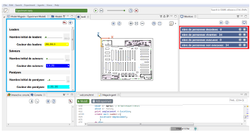
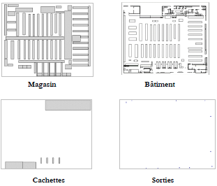
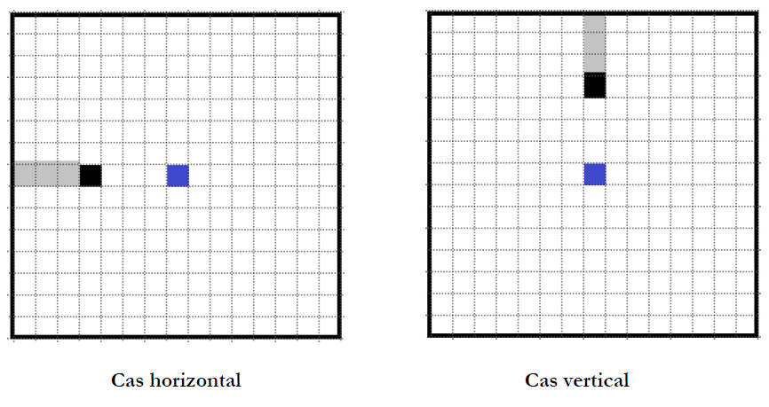
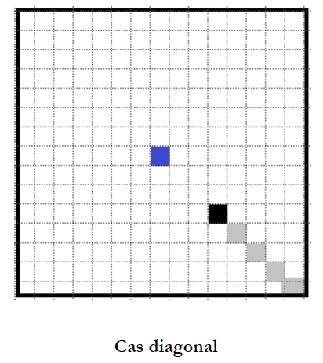
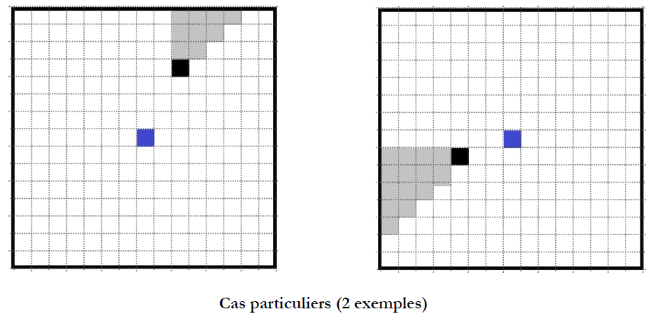

Chapter 2 Simulation of decision making
2.1 Graphical interface of the simulation

At the top is the start button, which will become a pause button if the simulation is started, a step-by-step button to perform the simulation step by step, a bar to select the minimum duration of a step, a button to reset the simulation and a button to close the simulation. The place where it says: “experiment ready” will display the number of steps performed during the simulation.
In the blue square on the left are the different variables of the simulation. They can take different values from one simulation to another.
In the centre is the map of the store, on which the agents move during the simulation. In the red box on the right are the real-time values of the following parameters: the number of people killed, the number of people alive, the number of people evacuated and the number of people not evacuated, i.e. still in the store. For each measure, terrorist agents and suicide bombers are not included.
At the bottom is the simulation code, written in GAML (GAma Modeling Language) as well as the heap size, it is a reference for the amount of memory used by the simulation objects. At the bottom left is the console.
2.2 Variables used in the simulation
There are five different classes of people: Leaders, Trackers, Paralyzed, Terrorists, Kamikazes
For these five classes, it is possible to select their colors as well as their number of individuals. It is also possible to set the speed and range of fire for terrorists as well as the speed and range of the suicide bomber’s bomb. The leading, following and paralysed classes are made up of young, old and middle-aged people. For each of the first two categories, it is possible to indicate their percentages in the store population (the last percentage is deducted from the other two). It is also possible to indicate the speed of each category. I can also adjust their fields of vision.
Leaders are people who make decisions all the time, without following others. Trackers are those who follow others unless they see a closer exit.
Paralyses are like followers who paralyze themselves when they see a terrorist or suicide bomber.
I have set for individuals in the hiding places, in grey, one chance in two to hide. Moreover, once hidden, they have an 80% probability of remaining hidden at the next cycle. And finally, hidden individuals have a 50% chance of being seen by terrorists. These values can of course be modified in the code.
2.3 Other files used
.shp files are shapefiles, or “shape files”. It is a file format for geographic information systems (GIS).
I used 4 of them, you can see them below:

The.shp store allows you to know the areas in which the leading, following and paralyzed agents can appear. Terrorists appear in the coordinate cell {450,450} and suicide bombers in the coordinate cell {220,450}.
The.shp building makes it possible to draw the boundaries of the building and consider them as obstacles. On this building, a 495*606 grid is applied. This corresponds to 1m on each side for each cell of the grid. The grid is not represented during the simulation in order to allow a more natural visualization of the movement.
The.shp cache allows you to trace the areas of the store in which the leading, following and paralyzed agents can hide. They are greyed out in the simulation (It is also possible to change these areas to a point that could attract individuals).
The.shp outputs are used to position the outputs of the store. They are shown in green in the simulation. They provide information on the number of people evacuated.
The simulation is divided into different layers. First of all, the walls of the store are marked out. They are considered as obstacles by the agents (building). Then, the locations in which the individuals appear (store) are added. Then the exits are plotted so that individuals can evacuate the store (exits). Finally, the hiding places are set up (hiding places). These four layers overlap during the simulation.
To create each layer, I used the computer-aided drawing software AutoCAD (Student Version) and an .dxf (Drawing eXchange Format) store plan.
For each layer, it was necessary to start from the original store drawing, then remove the unwanted parts and draw the desired points or areas.
Then, I transformed the files in.dxf format into.shp format files because GAMA only reads files in this format. For this I used CAD2Shape (Trial version) which allows us to convert according to the desired shape, for example for the file presenting the outputs, I needed points while for the cache file, I needed polygons. This is how I obtained the different layers while respecting the distances from the store.
2.4 Vision coding
In addition to these layers, the vision calculation of each individual agent is added. It is carried out during each movement of an individual agent, thus making it possible to regularly update its field of vision. To do this, a grid of a given size is drawn. It is centred on the agent. All the cells of the store in this grid are scanned. When an obstacle is detected, its box is considered invisible. It can hide other squares considered hitherto visible. The algorithm scans them again and makes them invisible.
Here is how our algorithm works for an individual (in blue) and an obstacle (in black) for each case (the grey boxes are not visible to the individual):



In these examples, I took a field of view of 7 cells, which is equivalent to 7 meters in our simulation (I took 1 cell = 1 meter). As the human field of vision is much greater, it will have to be increased during simulations, which will lead to an increase in computing time. Indeed, the field of vision is recalculated for each individual, at each simulation cycle.